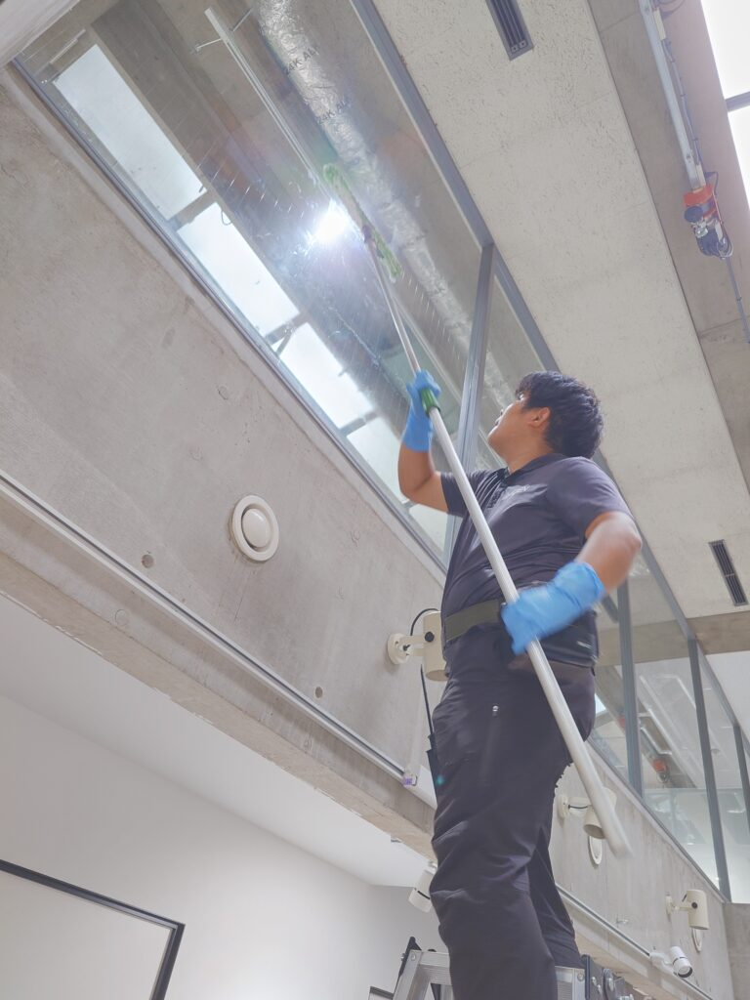
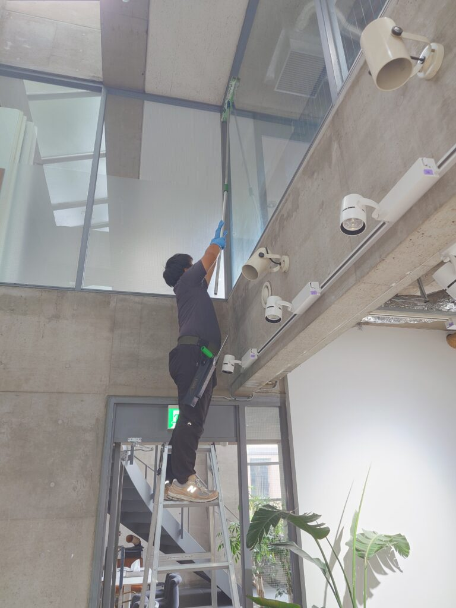
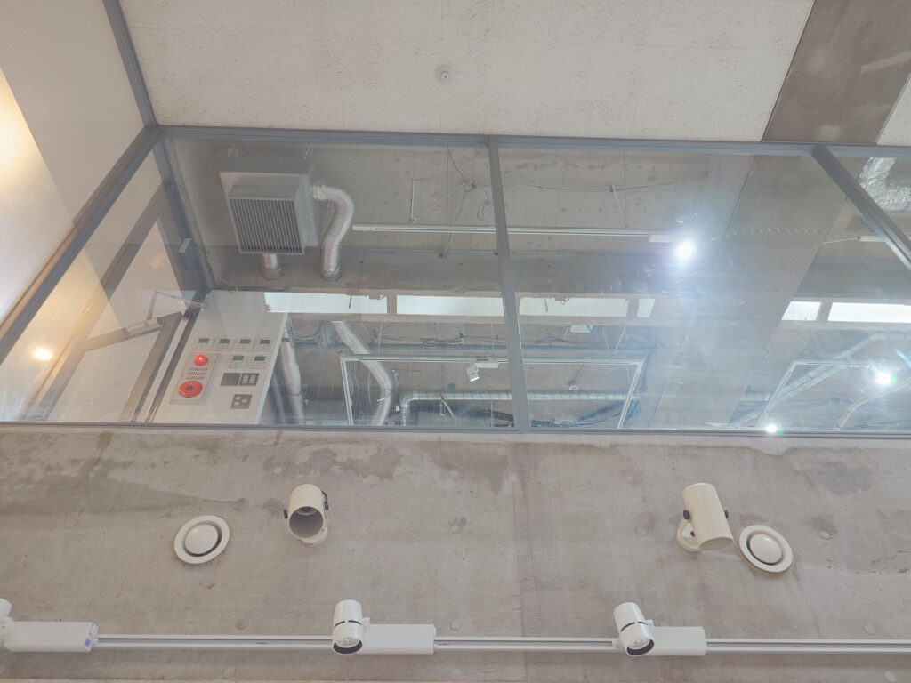
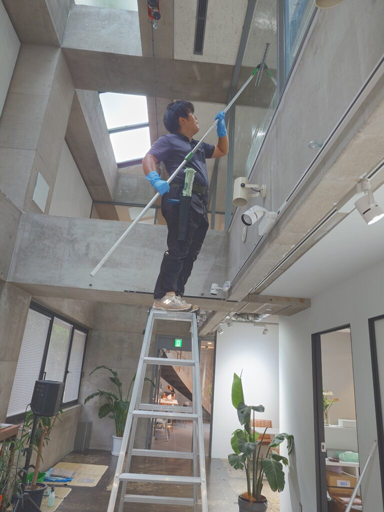
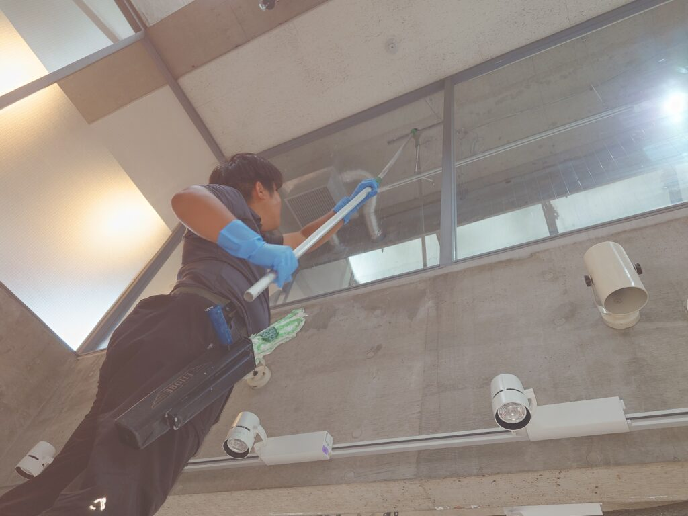

東京都品川区Ｔスタジオ様のスタジオ高窓のスペシャルクリーニングを実施しました!

品川区Ｔスタジオ様のスタジオ高窓のスペシャルクリーニングを実施しました!Tスタジオ様の最大高さ約6㍍の高窓に堆積した汚れをDAIZENメソッド窓スペシャルクリーニングで綺麗にしました!高さがかなり有り、窓1枚の面積も特大で、ゆっくり時間を掛けながら、慎重にプロフェッショナルクリーニングを実施しました!スッキリ綺麗になり、喜んで頂きました!




